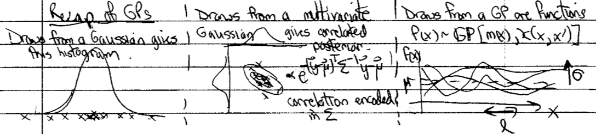

7.5. Lecture 20#
Recap of GPs#
Here is a schematic of the key points about Gaussian processes (GP).
{kind=link}
The “histogram” of GP draws will have the highest density at \(\mu\) (which is \(\mu(\xvec)\) in general) and \(\approx 2/3\) within \(\sigma\) of \(\mu\). The GP is characterized by a kernel \(\kappa\), which is a correlation function that gives the covariance for a multivariate Gaussian.
Different kernels vary in smoothness, spread, correlation length (a measure of how far apart inputs are to be uncorrelated).
The RBF kernel is a prototype:
\[ \kappa_{\rm RBF} = \sigma^2 e^{-(x-x')^2/2\ell^2} \]It is very smooth (cf. some of the Matern kernels), the spread is given by \(\sigma\), and the correlation length by \(\ell\).
Using GPs for interpolation (training points are known precisely) or regression (uncertainties at training points).
Given (multidimensional) training data with errors or precise, predict test data at intermediate \(x\) points or extrapolate
Impose structure through the kernel.
Claim: the data “speak more clearly” for GPs than for parametric regression for which there are basis functions (e.g., fitting a polynomial or a sum of Gaussians).
Basic formulas given \(\thetavec\) and \(\xvec = (\xvec_1\ \xvec_2)^{\intercal}\), where \(\xvec_1\) are the \(N_1\) training points while \(\xvec_2\) are the \(N_2\) test points.
\[\begin{split} \pmatrix{\fvec_1 \\ \fvec_2} | \xvec,\thetavec \sim \mathcal{N}\biggl[\pmatrix{m_1 \\ m_2}, \pmatrix{ K_{11} & K_{12} \\ K_{21} & K_{22}} \biggr] \end{split}\]where
\[\begin{split}\begin{align} K_{11} & = \kappa(\xvec_1, \xvec_1) \\ K_{22} & = \kappa(\xvec_2, \xvec_2) \\ K_{12} & = \kappa(\xvec_1, \xvec_2) = K_{21}^\intercal \\ \end{align}\end{split}\]Then manipulation of matrices tells us that
\[ \fvec_2 | \xvec_1, \fvec_1, \thetavec \sim \mathcal{N}(\tilde m_2, \widetilde K_{22}) \]where
\[\begin{split}\begin{align} \widetilde m_2 & = m_2 + K_{21}K_{11}^{-1}(\fvec_1 - \mvec_1) \\ \widetilde K_{22} & \equiv K_{22} - K_{21}K_{11}^{-1}K_{12} . \end{align}\end{split}\]So \(\tilde m_2\) is our best prediction (solid line) and \(\widetilde K_{22}\) is the variance (determines the error band).
We need to add some noise (called adding a “nugget”) even if the data is perfect for numerical reasons: \(K_{11}^{-1}\) will very probably be unstable without it.
Selected exercises from notebook#
Here we’ll try some of the exercises from Exercise: Gaussian Process models with GPy.
Getting started: The Covariance Function
Start with RBF and do shift-shift-tab to see the arguments.
kernis for kernel, another name for the covariance function. \(\kappa(r) = \sigma^2 e^{-r^2/2\ell^2}\) with \(r = |x_1 - x_2|\).This is a stationary kernel: only depends on \(r\) and not individually on \(x_1\) or \(x_2\).
Specifiy dimension, variance \(\sigma^2\) and length scale \(\ell\).
No useful docstring for plot \(\Lra\) Google “Gpy plot kern”
\(x\) is the value to use for the 2nd argument \(\Lra\) taken as 0 and then plot as function of \(r\)
Collectively answer Exercise 1a).
Do Exercise 1b).
Skip Covariance Functions in GPy
Computing the Covariance Function give the Input Data \(X\)
\(n\) data points in \(d\) dimensions \(\Lra\) \(n\times d\) array
Matern52 \(\Lra\) this is \(\kappa(r) = \sigma^2 \Bigl(1 + \frac{\sqrt{5}r}{\ell} + \frac{5r^2}{3\ell^2}\Bigr)e^{-\sqrt{5}r/\ell}\)
\(X\) is full of random normal draws (\(\mu=0\), \(\sigma^2=1\))
get the covariance matrix from \(C=k.K(X,X)\), which has all combinations of the inputs
With \(X_1 = (x_1\ y_1)^\intercal\) and \(X_2 = (x_2\ y_2)^\intercal\) \(\Lra\) \(r = \sqrt{(x_1 - x_2)^2 + (y_1 - y_2)^2}\)
Why do we know eigenvalues are \(>0\)? (No error from \(\log 10\)!)
Notice range of eigenvalues in orders of magnitue.
Try Matern 32 and RBF.
Try combining GPs
Adding GPs is like an OR operation; multiplying GPs is like an AND operation.
Where will 2 RBF’s have their maximum? What will it be?
Use sum if we have multiple trends in the data (e.g., a slowly changing envelope of rapidly changing behavior).
Sampling from a Gaussian Process
Here we sample from \(\mathcal{N}(\mu,C)\) where \(C\) is the \(\Sigmavec\) for \(X,X\).
Change to
mu = np.linspace(-1.,1.,len(X))\(\Lra\) underlying mean function.Try some different covariance functions.
for i in range(nsamples): a.plot(X[:], Z[i,:]);
What do you expect for
nsamples = 50?
A Gaussian Process Regression Model
Generate data and noise to fit.
Instantiate an RBF model.
Combine with data:
GPy.models.GPRegression(X,Y,k)3 parameters to optimize
noise is added by default \(\Lra\) specify
noise_varinGPRegression
Make a better fit with
lengthscale = 0.1Step through Covariance Function Parameter Estimation.
A Running example.
Exercise for the reader!
Application 1: GP emulator from Higdon et al. paper#
“A Bayesian Approach for Parameter Estimation and Prediction using a Computationally Intensive Model” by Higdon et al.
Bayesian model calibration for nuclear DFT using a GP emulator.
A landmark in low-energy nuclear physics but the general idea of an emulator was not new.
Nuclear density functional theory (DFT): given \(N\) (neutron number) and \(Z\) (proton number), a universal functional (same for all \(N\) and \(Z\)) predicts the mass of the nucleus (and other properties, such as size and deformation).
Solve many Schrodinger equations iteratively to self-consistency (note: pairing is important so it is generally many more equations than \(N + Z\)).
For each nucleus this takes about 5 to 10 minutes and one wants to train on about 100 nuclei \(\Lra\) too expensive to have a model that runs the DFT for every case as you change parameters.
Solution: train a GP and use this in place of the DFT model \(\Lra\) “emulator”.
Table I shows \(p=12\) parameters to be determined.
PCA and SVD used to enable a reduced basis for the model.
With 9 combinations instead of the original 12, about 99.9% of variations can be explained. (We’ll come back to PCA and SVD at the end of the course.)
Uniform priors assigned but with well-informed intervals.
Need to specify initial training set \(\Lra\) see Fig. 3.
Uses space-filling Latin hypercube \(\Lra\) multidimensional generalization of 2D “unchallenged rook” chess problem.
Figure 8 shows posterior for \(\thetavec\) \(\Lra\) the main goal.
What is well determined?
\(E^{\rm NM}/A\)
What returns the prior?
\(V_0^p\)
What pairs are highly correlated?
\(1/M^*\)s and \(C_0^{\rho\nabla^2\rho}\) or \(C_0^{\rho\nabla J}\)
Figure 10 shows how well it works. Predicted 90% intervals for \(\eta(\thetavec) + \epsilon\) (light blue). Is it too conservative?
Eigenvector continuation emulators#
The idea of an emulator is to have a fast computer model of a computationally intensive calculation. Possible frameworks include Gaussian processes (as we have discussed) and neural networks. These are trained on calculations using a representative set of parameters and then can rapidly interpolate for other sets of parameters. (The performance on extrapolation is usually not very good.)
In the last few years, a new type of emulator has been developed, under the name of eigenvector continuation (EC).
It is applicable to calculations that can be cast as variational; in particular, if there is a functional for the observable in question that is stationary at the exact input.
If there is a good trial input, an excellent approximation to the exact result is obtained.
Examples of such functionals are for bound states in quantum mechanics, which is a familiar example, and also for scattering observables (e.g., phase shifts).
The secret of EC is that a linear combination of exact solutions (eigenvectors) for several sets of Hamiltonian parameters makes a spectacularly effective trial wave function. The application of the emulator for other parameter sets, such as needed in Bayesian parameter estimation or experimental design, is very fast because it only involves linear algebra with small matrices. And the accuracy is also spectacular.
The use of fast and accurate emulators opens the door to full Bayesian sampling for many problems because the bottleneck is usually because of a computationally expensive likelihood calculation.
Application 2: EFT truncation errors#
Go through “Bayesian Statistics for Effective Field Theories” slides.
p. 9: An analog to effective field theories (EFTs). Features:
complete low-energy characterization;
works only up to a boundary (breakdown);
gets worse as boundary is approached:
prior knowledge: naturalness of appropriately scaled coefficients. What prior to take?
p. 13: What kind of statistics problem do we have?
GPs are useful for EFT truncation errors.
pp. 18-29: GPs for coefficient functions (e.g., in energy or scattering angle). Plan: use low-order predictions to learn underlying GP hyperparameters; then use these to predict omitted terms.
p. 30: Real calculations look like this!
pp. 35-39: Hierarchical statistical model.
pp. 40-42: To specify the GP we need to learn \(\mu\), \(\sigma\), and \(\ell\). The use of conjugate priors mean we get results for \(\mu\) and \(\sigma\) immediately. \(\ell\) still needs to be sampled or optimized. Note the distinction between a curve-wise and point-wise model; the latter misses correlations.
pp. 43-44: Real-world error bands for nucleon-nucleon observables.
pp. 45-57: Lead in to later discussion: model checking.
p. 48: Physics discovery: What is the EFT breakdown scale for different observables? A new frontier!